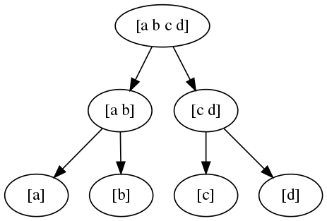

Master Method

Consider, a problem with an input of size \(n\) is being solved with a Divide and Conquer method, so that the problem is divided into smaller subproblems, and the subproblem is recursively solved.
$$
T(n) \leq aT(\frac{n}{b})+\mathcal{O}(n^d)
= \begin{cases}\mathcal{O}(n^d)&\text{if }a\lt b^d\\
\mathcal{O}(n^d\log n)&\text{if }a=b^d \\
\mathcal{O}(n^{\log_b a})&\text{if }a\gt b^d \end{cases}
$$
where \(T(n)\) the runtime function, assume that \(T(1) = c \leq \mathcal{O}(1)\) the basic operation is a constant time, \(a\) the number of recursive call, \(b\) how each input is divied into smaller part, \(d\) the complexity of operation outside the recursive call. For level \(j\), the number of subproblem is \(a^j\), each subprolem has an input of size \(n/b^j\), and there are \(\log_b n\) levels.
Upper bound on the work at level \(j\),
\(\qquad a^j\cdot c\bigg[\frac{n}{b^j}\bigg]^d=cn^d\bigg[\frac{a}{b^d}\bigg]^j\)
Total work done, \(\qquad cn^d\sum^{\log_b n}_{j=0}\big[\frac{a}{b^d}\big]^j\)
If \(a=b^d\),
\begin{align*}
cn^d\sum^{\log_b n}_{j=0}\big[\frac{a}{b^d}\big]^j =
cn^d\sum^{\log_b n}_{j=0}1^j = cn^d(\log_bn+1)\leq \mathcal{O}(n^d\log n)
\end{align*}
If \(a\gt b^d\), \(r^N \gg r \gt 1\), with the use of geometric sequence,
\begin{align*}
& cn^d\sum^{\log_b n}_{j=0}\big[\frac{a}{b^d}\big]^j =
cn^d \frac{1-r^{N}}{1-r} \approx cn^d \bigg[\frac{a}{b^d}\bigg]^{\log_b n}\\
& =cn^da^{\log_b n}b^{-d\log_bn} = cn^dn^{-d}a^{\log_bn} = ca^{\log_bn} = cn^{\log_ba}\leq \mathcal{O}(n^{\log_b a})
\end{align*}
If \(a\lt b^d\), \(r^N\rightarrow 0\),
\begin{align*}
& cn^d\sum^{\log_b n}_{j=0}\big[\frac{a}{b^d}\big]^j \approx \frac{cn^d}{1-r}\approx c'n^d \leq \mathcal{O}(n^d)
\end{align*}
Examples
- Merge Sort, \(a=2, b=2 ,d=1\), \(T(n)\leq \mathcal{O}(n\log n)\)
- Binary Search, \(a=1, b=2 ,d=0\), \(T(n)\leq \mathcal{O}(\log n)\)
- Karatsuba without Gauss, \(a=4, b=2 ,d=1\), \(T(n)\leq \mathcal{O}(n^{\log_2 4}=n^2)\)
- Karatsuba with Gauss, \(a=3, b=2 ,d=1\), \(T(n)\leq \mathcal{O}(n^{\log_2 3=1.59})\)
- Strassen's Matrix Multiplication, \(a=7, b=2 ,d=2\), \(T(n)\leq \mathcal{O}(n^{2.81})\)
- Fictitious recurrence, \(a=2, b=2 ,d=2\), \(T(n)\leq \mathcal{O}(n^2)\)
- QuickSort, \(T(n)\leq\mathcal{O}(n\log n)\) in average, \(\mathcal{O}(n^2)\) at worst.
- RSelect, average \(\mathcal{O}(n)\), worst \(\mathcal{O}(n^2)\).
References